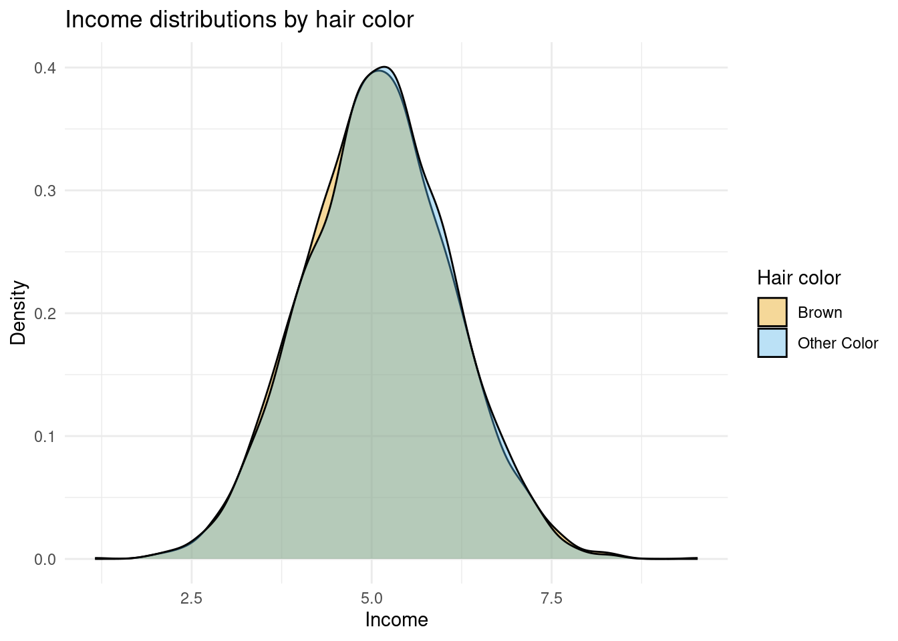

library(tidyverse)
set.seed(42)
sim <-
tibble(college = runif(5000) < .3) %>%
mutate(hair = case_when(
runif(5000) < .2+.8*.4*(!college) ~ "Brown",
TRUE ~ "Other Color"
),
log_income = .1*(hair == "Brown") +
.2*college + rnorm(5000) + 5
)
glimpse(sim)11 Causal Analytics
Learning Goals
By the end of this chapter, students should be able to:
- Explain the difference between correlation and causation.
- Describe the counterfactual (potential outcomes) framework.
- Contrast model-based inference and design-based inference.
- Analyze the DonorsChoose experiment as an example of design-based causal inference.
- Recognize challenges in the experimental framework such as compliance and spillovers.
11.1 What is Causal Analytics?
Many of the most important questions in business are not about what has happened, or even what will happen, but about what will change if we act differently. If we lower a monthly subscription price, will sign-ups increase? If we redesign our warehouse layout, will delivery times improve? If we introduce a new training program, will employee performance rise? If we change our supplier contracts, will costs go down? These are causal questions—they ask whether changing one thing actually causes a change in another.
Causal analytics is the process of using data to make credible claims about cause and effect. It is not enough to observe that sales rise when advertising rises, because both may be driven by a third factor like seasonality. Instead, we want to know: did advertising itself cause sales to rise?
Businesses care about causality because managers rarely control outcomes directly. They make decisions—to set a price, run an ad, or add a new feature. Each decision can be thought of as an intervention. Causal analytics helps estimate what outcomes would have looked like with and without that intervention, answering the “what if” questions at the heart of business decision-making.
At the heart of every causal question there is a counterfactual built in: what would have happened otherwise? If a company lowers its subscription price, what would sign-ups have been if the price had stayed the same? If a retailer invests in new training, what would employee performance have looked like without it? The challenge is that we never observe both worlds for the same customer, store, or firm.
Causal analytics is about finding credible ways to approximate those missing counterfactuals. Sometimes we can try to do this with assumptions about how the world works. As we’ll see below, this is a worthwhile but often difficult way to make causal claims. An alternative approach is to design our research in ways that create cleaner comparisons. To see how each of these options play out in practice, let’s turn to an example.
11.2 The Business Challenge
DonorsChoose is a U.S.-based non-profit platform that connects teachers with regular people who want to support classrooms. A teacher might post a project such as “new art supplies for my class” or “science kits for an after-school program,” and donors can choose which projects to fund. Over the years, millions of small donations have helped fund everything from books to laptops.
For DonorsChoose, raising money is only part of the story. Just as important is raising awareness. If a donor tells others about their gift, it can spark a chain reaction: friends may click through, learn about the project, and decide to donate themselves. This is a form of **online word-of-mouth (WoM)*. Unlike face-to-face word-of-mouth, it often happens through a quick post on Facebook, Twitter, or email after making a donation.
What is Word-of-Mouth?
Word-of-mouth (WoM) is when customers or supporters voluntarily share information, opinions, or experiences about a product, service, or cause with others. Because it comes from trusted peers rather than the organization itself, WoM can be especially influential.
In general, we as business analysts, separate word of mouth into offline and online:
- Offline word-of-mouth happens when people talk in person — for example, a parent telling another at school pick-up about a great new teacher resource.
- Online word-of-mouth happens through digital channels — for example, posting on Instagram about a donation, or forwarding a project link by email.
Both forms rely on trust between people, but online word-of-mouth can spread more quickly and reach many more people at once.
But encouraging people to share is tricky. Donors may worry about appearing self-congratulatory (“look at me, I donated!”) or insincere. DonorsChoose therefore faces a classic communication challenge: how do you design a message that encourages sharing in a way that feels authentic and motivating?
For years, the platform used a simple prompt after each donation:
“Share this classroom with family and friends.”
The team considered a new version that framed sharing as part of a broader impact:
“Your donation can start a chain reaction, but only if you tell others about the cause.”
The question for DonorsChoose was clear: would this new wording actually cause more donors to share their gift with others?
Answering this question requires more than looking at raw data. Donations happen at different times of year, from different types of donors, and for different kinds of projects. How can we tell whether any change in sharing is really caused by the message, rather than by these other factors? This is the challenge we face when we do causal analytics.
5 min
DonorsChoose wants to know: Does the new message actually cause more donors to share?
How would you go about answering this question? Explain why you think your approach would work.
11.3 A First Approach: Comparing Before and After a Change
Imagine DonorsChoose rolls out the new message in September, replacing the old version used in August. After the switch, the share rate rises from 14% to 15%:
| Month | Message (after donation) | Share rate |
|---|---|---|
| August | “Share this classroom with family and friends.” | 14% |
| September | “Your donation can start a chain reaction…” | 15% |
It’s tempting to say the new wording worked. But notice what else changed: it’s a new month. September in the U.S. is back-to-school season, when different kinds of donors are active, new projects appear on the site, and public attention to education is higher. Any of these shifts could have raised sharing rates even if the message had stayed the same.
In fact, many factors can change from one month to the next:
- Seasonality: back-to-school timing, pay cycles, public interest in classrooms.
- Donor mix: more first-time vs. returning donors, or donors from different regions.
- Project mix: more urgent or attention-grabbing classroom needs.
- Traffic & visibility: a media mention, newsletter timing, or homepage tweaks.
- Other product changes: small interface changes that affect sharing.
- External events: news cycles, platform outages, or unrelated shocks.
These examples show why before/after comparisons are fragile: they capture not only the effect of the new message but also everything else that moved between August and September.
It’s tempting to say the new wording worked. But notice what else changed: it’s a new month. September in the U.S. is back-to-school season, when different kinds of donors are active, new projects appear on the site, and public attention to education is higher. Any, or all of these shifts could have played raised sharing rates even if the message had stayed the same.
This means that the August–September comparison identifies a causal effect only if all of the following hold:
- The message wording is the only change affecting sharing across months.
- The composition of donors is the same in both months.
- The mix of projects (types, topics, urgency) is the same.
- There are no time trends or external shocks that affect sharing.
- There were no other product/UX changes relevant to sharing.
These are strong assumptions and usually unverifiable in real settings.
This is why before and after comparisons can mislead us: they mix the effect of the new message with all the other things that changed at the same time. To get closer to the truth, we need better ways of making comparisons. Sometimes that means using what we already know about how the world works. Other times it means setting up the situation so that groups are directly comparable. In the next section, we’ll see how to think about this more clearly using the idea of counterfactuals.
11.4 Thinking in Counterfactuals & Potential Outcomes
As we’ve already discussed, every causal question has a hidden “what if” built into it.
- If a donor saw the new message, what would have happened if they had seen the old one instead?
- If a donor saw the old message, what would have happened if they had seen the new one?
These ‘what ifs’ are called counterfactuals. They describe the outcomes we don’t get to observe, but that we’d love to know.
To keep track of this idea, we can use some simple notation. For each donor \(i\), let:
- \(Y_i(1)\): the outcome if donor \(i\) sees the new message.
- \(Y_i(0)\): the outcome if donor \(i\) sees the old message.
These two values are called potential outcomes. They are “potential” because both are possible for donor \(i\), depending on which message they see, but only one will ever be observed in reality.
The numbers in parentheses — (1) and (0) — are just labels for the two conditions:
- \(1\) = treated with the new message
- \(0\) = control, the old message
So \(Y_i(1)\) means “what would happen to donor \(i\) if they get treatment,” while \(Y_i(0)\) means “what would happen if they don’t.” The causal effect for donor \(i\) is the difference between these two potential outcomes:
\[ Y_i(1) - Y_i(0) \]
This gives a precise way of saying: how much more (or less) likely would donor \(i\) be to share if they saw the new message instead of the old one?
The Fundamental Problem of Causal Inference
Here’s the catch: for each donor, we only ever get to see one outcome in real life.
- If donor \(i\) saw the new message, we observe \(Y_i(1)\). But we never learn what would have happened under the old message, \(Y_i(0)\).
- If donor \(i\) saw the old message, we observe \(Y_i(0)\). But we never see what would have happened if they had seen the new message, \(Y_i(1)\).
Each donor therefore has two potential outcomes — one under each message — but only one of them is ever observed. The other is always hidden. This is why causal inference is hard: the counterfactual outcome (the “what if” world that didn’t happen) is always missing.
Why the Before/After Comparison Fails
Think back to the August–September comparison.
- In September, we saw donors under the new message (\(Y_i(1)\)), but we never got to see those same donors under the old message (\(Y_i(0)\)).
- In August, we saw a different set of donors under the old message.
What if a donor gave in both August and September? Even then, the situation is not so clean: the same person might be in a different mood, supporting a different project, or responding to the season. Those changes mean their August outcome isn’t a perfect stand-in for the missing September counterfactual.
The problem is that before/after compares across time, not across identical conditions. It never truly gives us both potential outcomes for the same donor at the same moment — and that’s what we’d need for a clean causal claim.
Because we can’t rewind time to show each donor both messages in the exact same situation, researchers need other strategies to approximate the missing counterfactuals. Next, we’ll see two broad approaches: relying on assumptions (model-based inference) and relying on research design (design-based inference).
Moving from Individuals to Groups
Since we can’t calculate the exact causal effect for one donor, we shift our focus to groups. Instead of asking what was the effect for donor (i)?, we ask: *on average, what happens when donors see the new message compared to when they see the old one?
Formally, this is the average treatment effect (ATE):
\[ \text{ATE} = E[Y(1) - Y(0)], \]
where \(E[\cdot]\) means “the average across all donors.”
In words: the ATE tells us the average difference in sharing rates if everyone were shown the new message versus if everyone were shown the old one. This is exactly the kind of information DonorsChoose cares about. They don’t need to know the effect on one particular donor; they need to know whether, on average, changing the message boosts sharing.
As you might recall from your introductory statistics class, the expectation operator is linear, which means we can “move it inside”:
\[ E[Y(1) - Y(0)] = E[Y(1)] - E[Y(0)]. \]
This shows that the average causal effect is equal to the difference between two expected outcomes:
- the expected outcome if everyone got the new message, and
- the expected outcome if everyone got the old message.
This looks much closer to something we can try to estimate with data. In practice, we often replace expected values—unknown population statistics—with their approximations, the sample averages. If we do that, we get:
\[ \text{SATE} = \bar{Y}(1) - \bar{Y}(0), \]
where \(\bar{Y}(0)\) is the average sharing rate among donors who actually saw the new message, and \(\bar{Y}(0)\) is the average sharing rate among donors who saw the old one. This is known as the Sample Average Treatment Effect or, more simply as the difference in means estimator.
So does that mean we can just take the difference in sample means and be done? Not quite. The formula is correct — the average treatment effect can be estimated as a difference in means — but only if we are comparing the right groups and comparing the right sample means.
In the before/after case, the groups came from different months, with different mixes of donors, projects, and seasonal factors. Those averages combine the effect of the new message with all those other differences. What we really want is to compare two groups that are the same in every respect except the message they saw. Only then does the difference in means reflect the true causal effect.
So the math itself is not the problem — it’s the data we feed into it. That’s why research design — how we create the groups for comparison — is so important. Let’s explore two approaches.
11.5 Approach 1 - Model-Based Inference
So how can we make groups comparable? One option is to use what we already know — or think we know — about how the world works to adjust our comparisons. We will call this approach model-based inference. In model-based inference, we build a model that explains how outcomes are generated and use that model to correct for differences between groups. If our assumptions about the model are right, our comparison becomes more meaningful. If they’re wrong, the model can mislead us just as easily as the data.
To see how this works, let’s abstract away from the DonorsChoose business problem and start with a fictious example where we are in control of how the data are generated. Imagine we’re studying a very simple artificial economy where earn an income. To be precise, the economy will follow the following 6 rules:
- Income is log-normally distributed
- Being brown-haired gives you a 10% income boost
- 20% of people are naturally brown-haired
- Having a college degree gives you a 20% income boost
- 30% of people have college degrees
- 40% of people who don’t have brown hair or a college degree will choose to dye their hair brown
Normal vs. Log-Normal Incomes
A normal distribution is symmetric: most values cluster around the mean, and the probabilities of being above or below it are similar. Height or test scores often follow this pattern.
In contrast, a log-normal distribution is skewed to the right. Most people earn moderate incomes, but a small number earn much more.
When we say income is log-normally distributed, we mean that if we took the logarithm of income (for example, log(income)), the result would follow a normal distribution. That’s why we simulate baseline incomes this way—to reflect a realistic spread of lower and higher earners.
To see this economy in action, let’s generate data for 5,000 people living in it:
Rows: 5000 Columns: 3
── Column specification ────────────────────────────────────────────────────────
Delimiter: ","
chr (1): hair
dbl (1): log_income
lgl (1): college
ℹ Use `spec()` to retrieve the full column specification for this data.
ℹ Specify the column types or set `show_col_types = FALSE` to quiet this message.We want to use this data to estimate the causal effect of having brown hair on income. According to the rules above, we should see a difference of 10%. Let’s look at the distribution of income between the two hair colors:
sim %>%
ggplot(aes(x = log_income, fill = hair)) +
geom_density(alpha = 0.4) +
ggokabeito::scale_fill_okabe_ito() +
labs(
x = "Income",
y = "Density",
fill = "Hair color",
title = "Income distributions by hair color"
) +
theme_minimal()
The figure above doesn’t suggest a 10% difference in income between hair colors, as the density plots are almost perfectly overlapping. What if we tease out the mean difference in the data by comparing mean income of brown haired people to non-brown haired people? Computing difference in log income will give us a percentage difference:
sim |>
group_by(hair) |>
summarise(mean_income = mean(log_income)) |>
mutate(pct_diff = round(mean_income - lag(mean_income), 2))# A tibble: 2 × 3
hair mean_income pct_diff
<chr> <dbl> <dbl>
1 Brown 5.09 NA
2 Other Color 5.10 0.02Here we see the difference in incomes in the data is two percent. That’s a far cry from the 10% we know it is in the data. Why do we see the discrepancy? Because our comparison is confounded — we’re not comparing the right groups. That might feel like an incorrect statement because we are comparing across hair colors which is what we wanted to do
Remember that some people who aren’t naturally brown-haired chose to dye their hair, and those individuals are also less likely to have a college degree. As a result, the group we observe as “brown-haired” contains more people without college degrees than the group we observe as “not brown-haired.” Since education has a strong positive effect on income, this imbalance pulls the average income of the brown-haired group downward, making the true 10% income boost look much smaller.
This is a classic example of omitted variable bias: a hidden factor (education) is correlated with both the treatment (hair color) and the outcome (income), distorting the relationship we observe in the data. The question is whether we can make assumptions or use what we know about the economy to find the right comparisons.
Among college graduates, nobody is dyeing their hair — people either have naturally brown hair or they don’t. That means within this group, hair color isn’t tangled up with other factors like education or hair-dyeing choices. The only reason we might see income differences is because brown hair itself gives an income boost in our simulated economy. So, let’s focus only on college graduates and re-run our summary statistics:
sim |>
filter(college == TRUE) |>
group_by(hair) |>
summarise(mean_income = mean(log_income)) |>
mutate(pct_diff = round(mean_income - lag(mean_income), 3))# A tibble: 2 × 3
hair mean_income pct_diff
<chr> <dbl> <dbl>
1 Brown 5.33 NA
2 Other Color 5.20 -0.122Now we see a mean difference of 12.2%. This is much closer to the 10% that we know is true, and the difference between 12.2% and 10% is due to randomness.
What we just did is an example of model-based inference in action. We used our understanding of how this economy works — that education affects income and that dyeing only happens among people without degrees — to decide how to make a fair comparison. By restricting the sample to college graduates, we effectively controlled for education, removing the main source of confounding that meant our naive difference in means between hair colors across the entire population was not returning the correct answer. This works because our model of the world told us that once we hold education constant, the only remaining systematic difference between groups is hair color itself.
This is the essence of model-based inference: we rely on a model — a set of assumptions about how outcomes are generated — to adjust our comparisons and approximate the right counterfactuals. If our model is right, our inference is credible. If it’s wrong, we may still be fooled by hidden differences.
The challenge in real business data is that the assumptions we need to make are rarely obvious. Model-based inference often requires expert-level domain knowledge to even guess which factors matter and how they interact. And even with such expertise, we can never be sure our assumptions are correct — because, as analysts, we don’t control all the features of the economy we study.
Where Do Assumptions Come From?
In our simulated economy, we didn’t have to guess which factors mattered — we already knew the rules that generated the data. That means our assumption about the model (that income depends on education and hair color, and that dyeing only happens for non-graduates) came from knowledge, not belief.
In the real world, we rarely get that luxury. Business Analysts must rely on theory, prior evidence, or domain expertise to decide which variables to include and what relationships to assume.
That’s why model-based inference always carries some risk: our conclusions are only as good as the model we choose.
11.6 Approach 2 – Design-Based Inference
We almost never know the full story behind how data are generated. We can make educated guesses — and build models and assumptions to adjust for what we think matters — but those models are only as good as the assumptions behind them. A missing variable or a small misspecification can quietly undo our hard work and lead to incorrect conclusions.
Design-based inference takes a different route. Instead of leaning on assumptions about how the world behaves, it looks to the way data were collected — i.e. the design — to provide the basis for causal analysis. We’re going to focus on situations where the design of the data collection is intentional and controlled by the analyst. In particular, we will focus on cases where the intervention we want to understand is assigned deliberately — by the analyst or the platform — through an experiment.
Beyond Experiments: When the ‘World’ Does the Randomization for Us
So far, we’ve talked about experiments where we decide who gets which version of a message, offer, or experience. That’s the cleanest way to learn about cause and effect — but it’s not the only one.
Sometimes, the world creates opportunities that look a lot like experiments. Maybe a new policy rolls out in one city before another, or a website change goes live for some users first. Even though we didn’t plan it, the situation still lets us make fair comparisons — almost as if random.
These are called natural or quasi-experiments. They’re a powerful way to learn from real-world data when we don’t have direct control, but we won’t cover them in this book. You’ll encounter them later in your studies, when we look at how to draw causal conclusions from real-world data without direct experimental control.
Using Randomization to Create Comparability
The key idea behind design-based inference is that we can create fair comparisons through how we collect data. Randomization is the simplest and most powerful way to do that.
When we randomly assign individuals to receive an intervention — each person has the same chance of ending up in either group. That means any pre-existing differences, which previously caused us difficulty, are spread out evenly on average across both groups.
Let’s visualize that.

In this figure, every participant starts in the same big pool. Random assignment then divides them into two groups — treatment and control — by chance. Because this process is random, the two groups are comparable in expectation. In other words, they should look roughly similar in everything except for the intervention they receive.
That’s the magic of randomization: it balances both observable and unobservable characteristics on average. So when we compare the average outcomes of these two groups, we can attribute any difference to the treatment itself — not to who happened to be in which group.
In practice, this doesn’t mean the groups will be perfectly identical. With small samples, chance differences can still appear. That’s why we will ideally want to compare the characteristics of the treatment and control groups and verify that any differences in composition are just random noise. This check is often called balance testing.
From Randomization to Causal Effects
Now that we’ve seen what randomization does, let’s connect it back to our earlier discussion of counterfactuals.
We said that we want to compare two potential outcomes: what would happen if a donor did see the new message, and what would happen if the same donor did not. Since we can’t observe both for any individual, we shifted our focus to groups and learned that the average treatment effect can be estimated as a difference in means — but only if those groups are comparable.
Randomization gives us exactly that comparability.
When we randomly assign donors to treatment and control groups, each donor has an equal chance of receiving either message. This means that, on average, the groups have the same mix of characteristics — the same types of donors, projects, and contexts. So any difference in their average outcomes can only be due to the message they saw.
In a randomized design, these sample averages are unbiased estimates of the two potential outcomes we care about — the average outcome if everyone saw the new message and the average outcome if everyone saw the old one.
That’s why experiments are such a powerful form of design-based inference. By creating comparable groups before data collection, randomization makes the “right sample means” appear — by design, not by luck or modeling.
The DonorsChoose Field Experiment
Earlier, we saw that DonorsChoose wanted to understand how to encourage donors to share their support online — a small action that can create a big ripple through social networks.
To answer this question credibly, the researchers couldn’t just compare donors who chose to share versus those who didn’t. Those groups might differ in all sorts of ways: generosity, tech comfort, even how proud they felt about their donation. Any simple comparison would mix those differences in with the true effect of message wording.
So the DonorsChoose team and researchers designed a field experiment — a real intervention embedded in the platform. After making a donation, each donor saw a pop-up asking them to share the project with others. The version of that pop-up was randomly assigned:
| Group | Message type | Example text |
|---|---|---|
| Control | Standard message | “Please share this classroom with others.” |
| Treatment | Social-impact message | “Your donation can start a chain reaction — but only if you tell others.” |
Because the message type was assigned at random, the two groups of donors were, on average, the same in every other way — the “right sample means” achieved by design. That makes any difference in sharing behavior a credible estimate of the causal effect of message framing.
We can load the data from the experiment to explore the effects:
# A tibble: 6 × 13
user_id donated condition clickthrough recruited raised donatedsince n
<dbl> <dbl> <dbl> <dbl> <dbl> <dbl> <dbl> <dbl>
1 14 50 0 0 0 0 1 1
2 208 423 0 1 0 0 0 9
3 717 50 0 0 0 0 1 1
4 784 32 1 0 0 0 1 3
5 879 50 1 0 0 0 0 2
6 1296 99 0 0 0 0 0 1
# ℹ 5 more variables: propdevice <dbl>, numdevice <dbl>, device <chr>,
# firstvisit <dbl>, houroffirst <dbl>donors_choose <-
read_csv("data/donors_choose.csv")
head(donors_choose)In the data we see that we have the following information for each user_id:
- The amount they donated,
donated - Whether they were in the control condition (
condition = 0) or the treatment condition (condition = 1) - Whether the user shared the message,
clickthrough - Whether the user’s sharing led to new donors being recruited,
recruited
We can observe whether difference messaging led to (a) more users sharing, and (b) more recruitment of new donors by comparing means across conditions:
donors_choose |>
group_by(condition) |>
summarize(click = round(mean(clickthrough), 3),
recruit = round(mean(recruited), 3)
)# A tibble: 2 × 3
condition click recruit
<dbl> <dbl> <dbl>
1 0 0.144 0.028
2 1 0.151 0.03 Among donors who saw the standard message (control group), about 14.4% clicked to share their donation, and 2.8% went on to recruit at least one later donor through their link.
Among those who saw the social-impact message (treatment group), these numbers rose to 15.1% and 3.0%, respectively.
That may look like a small change — roughly a 0.7-percentage-point increase in sharing and a 0.2-percentage-point increase in recruiting others — but because these differences come from a randomized design, we can interpret them as causal effects.
On a platform with tens of thousands of donors, even modest percentage gains like these translate into hundreds of additional shares and new donations that wouldn’t have happened otherwise.
Is This a Big Effect?
Knowing that a difference is causal is only part of the story.
In business and policy settings, we also need to ask: is the effect large enough to matter?
Understanding the size of an effect helps us judge whether it’s practically meaningful — whether it changes behavior in a way that matters for decisions, strategy, or outcomes.
That depends on how we look at it. In absolute terms, the share-click rate increased from 14.4% in the control group to 15.1% in the treatment group — a difference of 0.7 percentage points. That’s the absolute change.
We can also express this as a relative change — how much larger the treatment mean is compared to the control mean:
\[ \frac{0.151 - 0.144}{0.144} = 0.0486 \]
That’s about a 4.9% relative increase in sharing.
So for every 100 people who would normally click “Share,” about five more did so after seeing the social-impact message.
For a single sentence of text, that’s already impressive.
Another way to judge whether an effect is big or small is to compare it to the overall variation in the data — how much people naturally differ in their behavior. The standard deviation measures that variation. If the treatment effect is large compared to the standard deviation, it means the intervention shifts behavior by a noticeable amount relative to how spread out the outcomes are. If it’s small compared to that variation, it means the change is subtle — most of the differences we see across people still come from their individual tendencies, not the treatment itself:
donors_choose |>
group_by(condition) |>
summarize(click = round(mean(clickthrough), 3),
recruit = round(mean(recruited), 3),
click_sd = round(sd(clickthrough), 3),
recruit_sd = round(sd(recruited), 3),
)# A tibble: 2 × 5
condition click recruit click_sd recruit_sd
<dbl> <dbl> <dbl> <dbl> <dbl>
1 0 0.144 0.028 0.351 0.254
2 1 0.151 0.03 0.358 0.25 The standard deviation for clickthrough is about 0.35, meaning donor sharing behavior varies a lot — some share, most don’t. Our observed increase of 0.007 is roughly 2% of one standard deviation (0.007 ÷ 0.35 ≈ 0.02). So the message wording shifted behavior only a small fraction of the natural variation in donor tendencies.
In fact, effects of this size are quite typical in modern quantitative marketing research.
Real-world behavior is noisy — people differ widely in how often they click, share, or buy — which makes the standard deviation of outcomes large.
That means even small shifts in the average outcome are hard to achieve.
In large-scale digital experiments, effects in the range of 0.01 to 0.05 standard deviations are common, and often considered meaningful because they influence key business metrics such as engagement, conversion, or revenue at massive scale.
But What About Statistical Testing?
In this chapter, we’ve focused on understanding what the causal effect means and how to interpret its size, not on formal statistical testing which you may already be familiar with.
In practice, we would often use tools such as t-tests or confidence intervals to assess whether an observed effect is likely to have arisen by chance.
Those techniques are important, but they belong in your toolkit once you’ve taken a Statistics 101-style course and feel comfortable with sampling variation and uncertainty.
For now, our goal is to reason about direction, magnitude, and practical importance without getting distracted by p-values.
The key question at this stage isn’t “is it significant?” but “is it meaningful?”
5 min
Let’s think of another way to think about whether the campaign was effective:
- What is the percentage increase in
recruitdue to the change in message? - What is the median amount donated for a user in the control condition? Use the
donatedcolumn - Assuming everyone who is recruited donates a similar amount to the control group users, how much extra revenue is generated from the additional recruited users?
Assumptions of Design-Based Inference
Randomized experiments give us a strong foundation for causal claims, but they still rest on a few important assumptions. All of them fit under two big ideas: comparability and stability.
1. Random Assignment Creates Comparability
Randomization should create two groups that are alike in every way except for the treatment itself.
1a. Randomization works as intended:
Everyone should have the same chance of receiving the treatment. If the randomization process is biased or breaks partway through (for example, a bug assigns more active donors to one condition), the groups may no longer be comparable.1b. No other differences between groups:
The treatment should be the only thing that differs. If the experiment accidentally changes more than one feature at once — say, both the message wording and the layout of the pop-up — we can’t tell which caused the effect.1c. Compliance with assignment:
People (or platforms) should actually receive the condition they were assigned to. If some donors in the treatment group never see the new message, or if some control donors accidentally do, the comparison between treatment and control becomes blurred. The randomization still defines who was offered treatment, but not necessarily who received it — a common real-world issue known as non-compliance.
When these hold, any difference in outcomes between groups can be attributed to the treatment itself — the groups are comparable by design.
2. Stable Unit Treatment Value Assumption (SUTVA)
Each donor’s outcome should depend only on their own treatment, and the treatment should mean the same thing for everyone.
2a. No interference between individuals:
One donor’s treatment shouldn’t affect another’s outcome. If treated donors post their message publicly and control donors see it, this “spillover” violates independence.2b. No selective attrition:
Everyone assigned to a condition should have a chance to produce an outcome. If some donors in one group never reach the sharing page, we might end up comparing incomplete groups.2c. Consistent treatment:
The “treatment” should mean the same thing for everyone — the same message, tone, and timing. If some donors see slightly different versions, our causal interpretation becomes fuzzy.
Together, these assumptions capture what makes experiments credible. Design-based inference doesn’t remove assumptions — it replaces the hard-to-test modeling assumptions of the previous approach with a smaller set that are transparent, verifiable, and tied directly to the research design.
When Random Assignment Isn’t Perfect
Even in well-designed experiments, things don’t always go exactly to plan. Sometimes people don’t comply with their assigned condition — for example, a donor in the treatment group never sees the new message, or a control donor stumbles onto it by accident. When that happens, the randomization still defines who was offered the treatment, but not necessarily who received it.
These real-world issues, known as non-compliance, can blur the clean comparison between treatment and control. Related problems, like spillovers (when one person’s treatment affects another’s outcome), create similar challenges.
In practice, even well-run experiments face complications like these. Recognizing and documenting them is part of doing credible causal analysis — design gives us a strong start, but implementation details matter just as much. These issues are explored more deeply in advanced courses on causal inference, where we learn how to diagnose and correct for imperfect implementation.
11.7 Putting It All Together
Causal analytics is about using data to answer “what if” questions — what would have happened if we had acted differently? Because we can never observe both worlds at once, we use strategies to approximate the missing counterfactual.
There are two main ways to do this:
Model-based inference relies on assumptions about how outcomes are generated. If those assumptions are right, the model helps us make fair comparisons; if they’re wrong, the results can mislead us.
Design-based inference relies on how data are collected. By deliberately assigning interventions through randomization, we can create comparable groups by design, reducing our dependence on unverifiable modeling assumptions.
Neither approach is assumption-free — but experiments make those assumptions simpler, clearer, and easier to check. That’s why randomized designs are often called the gold standard for causal inference.
Understanding these ideas is a core skill for business analysts. It allows us to separate patterns that merely correlate from changes that truly cause outcomes — a crucial step for making sound business decisions.
Looking Ahead
In the next chapter, we’ll shift focus from causal analytics — asking “what caused what?” — to predictive analytics, which asks “what will happen next?”.
Both perspectives are essential for data-driven decision-making, and together they form the heart of modern business analytics.